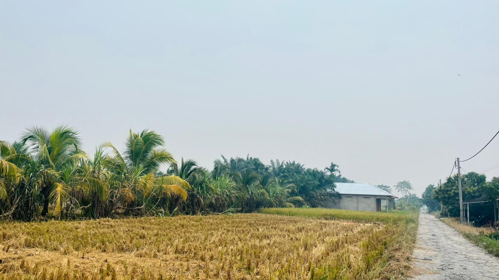
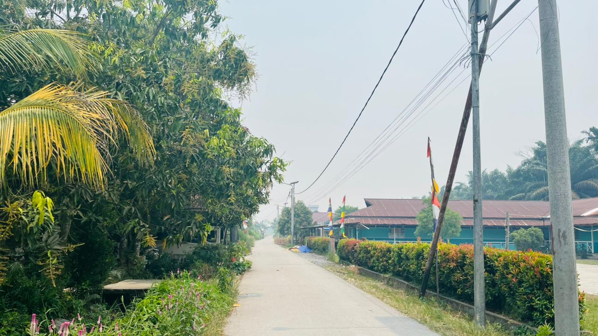

🌿
GALERI KEINDAHAN
🌿
🌾 HAMPARAN SAWAH
Hamparan sawah yang memberikan suasana hijau dan menyejukkan.

🕌 MASJID DESA
Tempat ibadah yang menjadi bagian penting kehidupan masyarakat.

🤝 Kehidupan Masyarakat
Kehidupan masyarakat yang penuh kebersamaan dan kekeluargaan.